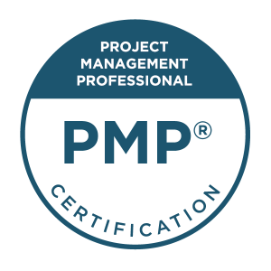
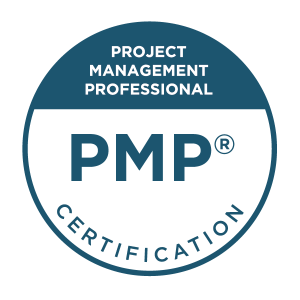
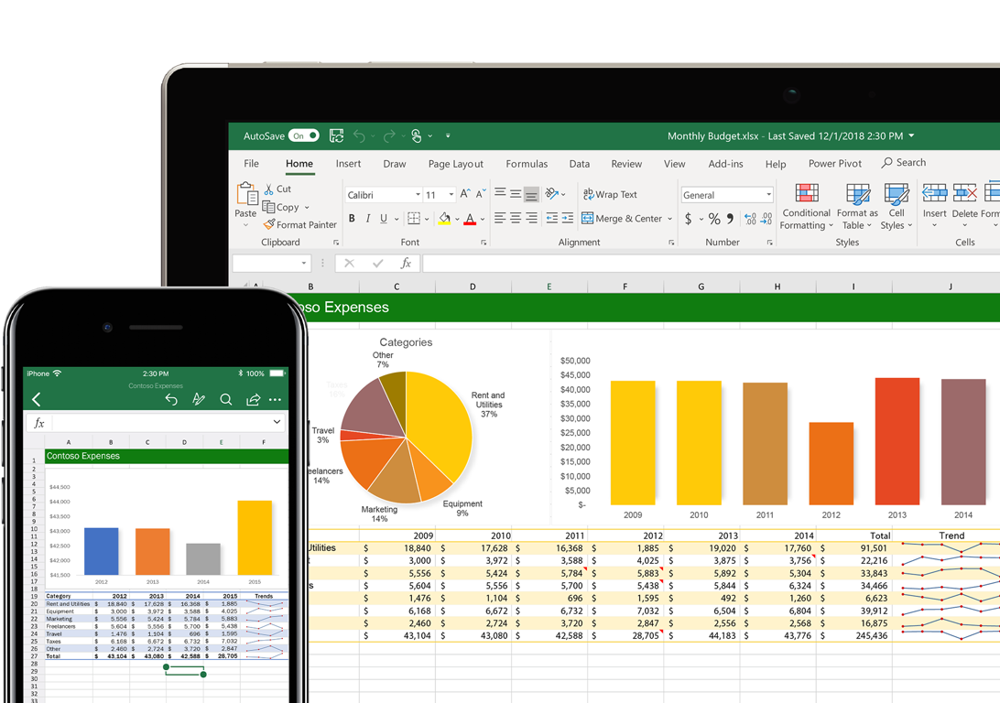

Project Management
I've worked in Project Management for over 5 years, completing project after project in high volume call centers and freelancing since 2018. I’ve achieved experience in customer excellence, project management and business development.

I’m currently pursuing a PMP certification to certify most of the time I’ve spent working and developing projects and strategies in my career. I have successfully led teams to deliver KPI’s through coaching and follow up. I have developed customer excellence programs for AT&T, Cricket Wireless and FLIR Security Systems and I am familiar with several lean methodologies and agile approaches.
ToggleInformation Technology
I want to become an expert in development. I love learning the ins and outs of simple coding, have always being proficient at it, when the pandemic came about and all of our lives took a whole different direction, I noticed a special amount of work put into getting people into coding. I liked that, I took advantage of it and worked towards learning and aspiring to certify all of the knowledge I get along the way.
Experience:
QA Tester for a Cybersecurity company
Technical Associate, Senior and Manager for
FLIR Security Systems
Design
I have aspirations of becoming a complete visual artist I love everything from color to photography, I like to place everything I think about in an elegant display, I would love to create ever day more, using all of my knowledge in Illustration, Photography helping push my creative design thinking more and more everyday.
I’m looking forward to professionally create responsive Web Design. Using this page mainly. I also hope to be an Adobe Certified Professional, through their online Education Exchange.


Certifications
In the complicated market of freelancing, you can only certify your knowledge and hope to make a much better name for yourself. I take this as an opportunity to take my personal brand as the first and most important company I own. I want to work on the appeal of working with me, one of the reasons this website was created as well. Here are the certifications I’m working on:
 

How do I work?
I use my vast amount of resources and abilities to make the best of every project I work on. I’m proficient in taking advantage of my resources. The apple ecosystem gives me the power and flexibility to do whatever needs doing- wherever that may be.
Having an easily automated life. Sync between devices. Availability to take care of issues first hand no matter where I am or what I bring with me, all devices are synchronized.
How do I effectively Research?
It starts with my Notes on my iPad… I dabble between Notability and Goodnotes.

After I get my thoughts and the important information right I will use Loom videos or Excel at an attempt to do creative reporting.

Skills and Abilities
Virtual Assistance
I'm qualified to provide assistance virtually, take care of business, keep task organized and present everything in a timely manner.
Call Center Management
My years of experience in the call center industry allowed me achieve my first lessons in team management, company organization and agile management among many others skills.
Data Entry
I'm qualified to provide Quality Reporting and rely heavily on the collection of reliable data to provide a clear view of the organization, allowing to set clear goals and make correct decisions
Communication
It's important for me to get information accross frequently while measuring its impact often, provide comprehensive fast reporting that can help processes move along fast and smoothly across the organization.
Project Management
I have actively worked and study management my entire life, it's my first passion, I enjoy working on becoming a better manager daily by practice and keeping current in new standards and developments always interested in exploring new theory and best practices through and through.
Quality Assurance
I have the focus and attention to go through processes or action plans left and right to measure every part of them, prioritizing gradual impact on the organization. I was once trained for a Business Development position in Teleperformance, I learned there some fundamental developmental tactics to ensure quality I've continued to use for the better part of my career.
Customer Excellence
I've been trained to deal and achieve success in customer service and technical support, I am qualified to take care of customers or any business to business inquires by email or phone, applying effective communication and negotiation skills all along.
Critical Thinking
I have the ability to engage in reflective and independent thinking. I trust and rely on analysing and solving problems with a structure rather than by instict.
Business Development
I believe in building long-term value to any organization by working and implementing activities that help make a business better always critically analysing current measures and challenging them for the betterment of the organization
Leadership
It's important to develop strategies that can help complement the vision of any organization by engaging in community, team management, and a people-oriented culture that gets everyone a chance to positively impact every strategy implemented to help further develop any successful organization.
Microsoft Office
I'm qualified to work and benefit from any office application, I'm fluent in Excel reporting and have engaged in top-notch visual reporting through clear and informative Power Point Presentations.
I have found most people to be inherently visual and have grown to consume most content that way regardless.
Business Strategy
I like building trust in outlining actions and tasks created for the organization to help make decisions with the smallest margin of error possible through effective leadership and communication, while challenging every approach and adopting new ways to achieve results critically and effictively every time.